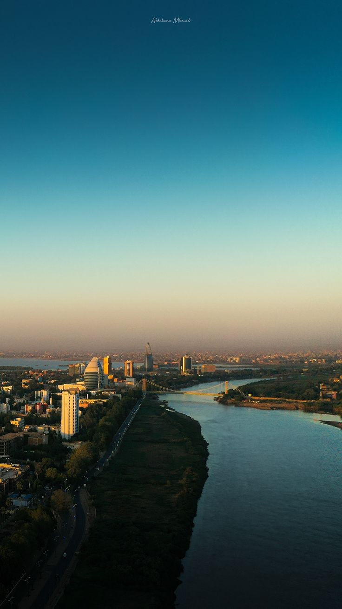
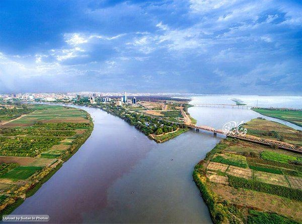
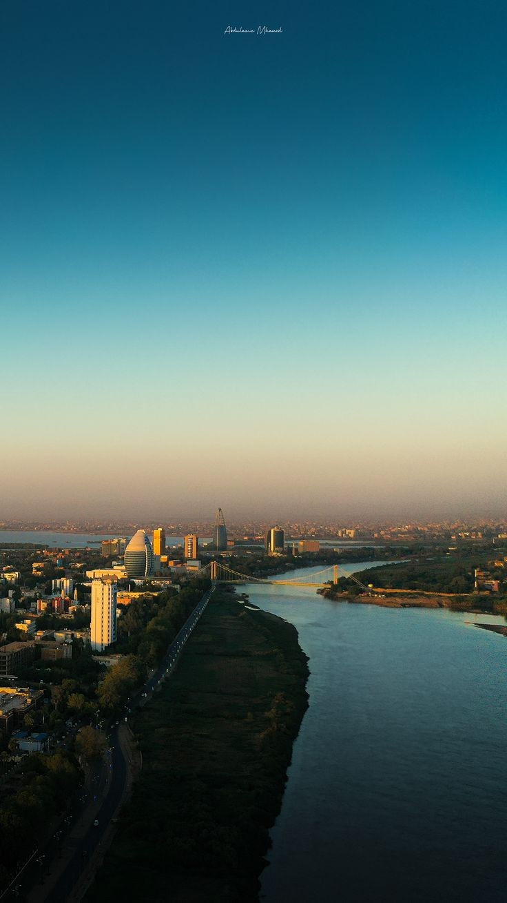
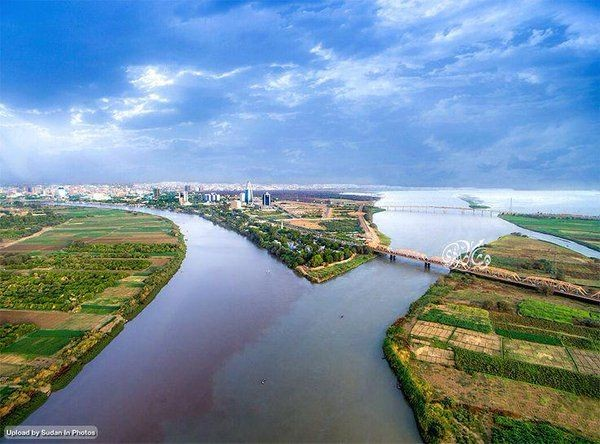

Al-Muqrin is the point where the White Nile and the Blue Nile converge in the Sudanese capital, Khartoum.
It is one of the most prominent natural and tourist landmarks in Sudan. The confluence is of geographical, historical, and aesthetic significance
where the two rivers unite to form the Nile River, which continues its journey northward towards the Mediterranean Sea
Location:
Confluence of the Niles is located in the center of Khartoum
near the White Nile Bridge and the Republican Palace.
is one of the places that separate Khartoum from the city of Omdurman
Natural Characteristics:
1. The White Nile:
- Originates from Lake Victoria in East Africa.
- Known for its slightly yellowish waters and calm flow.
2. The Blue Nile:
- Springs from Lake Tana in Ethiopia.
- Recognized by its dark color and strong flow.
3. The Confluence:
- At the meeting point,
a clear contrast between the waters of the two Niles
is visible before they gradually merge.
1. The White Nile:
- Originates from Lake Victoria in East Africa.
- Known for its slightly yellowish waters and calm flow.
2. The Blue Nile:
- Springs from Lake Tana in Ethiopia.
- Recognized by its dark color and strong flow.
3. The Confluence:
- At the meeting point,
a clear contrast between the waters of the two Niles
is visible before they gradually merge.
Historical Significance:
The Confluence of the Niles has witnessed numerous historical events in Sudan,
with the city of Khartoum developing around it since its founding.
It has been used as an important strategic location from
ancient times up to the period of Turkish-Egyptian rule.
The Confluence of the Niles has witnessed numerous historical events in Sudan,
with the city of Khartoum developing around it since its founding.
It has been used as an important strategic location from
ancient times up to the period of Turkish-Egyptian rule.
Tourism at the Confluence of the Niles:
1. Natural Beauty:
- The sight of the Nile convergence is a unique natural tableau.
- The area is surrounded by greenery and palm trees, adding to its beauty.
2. Tourist Activities:
- Boat tours to explore the convergence of the two rivers.
- Strolling in the gardens surrounding the confluence.
- Taking souvenir photos of the unique scene.
3. Nearby Landmarks:
- Tuti Island: Located at the confluence and is a great place for strolling.
- White Nile Bridge:
Offers a panoramic view of the confluence of the Nile
1. Natural Beauty:
- The sight of the Nile convergence is a unique natural tableau.
- The area is surrounded by greenery and palm trees, adding to its beauty.
2. Tourist Activities:
- Boat tours to explore the convergence of the two rivers.
- Strolling in the gardens surrounding the confluence.
- Taking souvenir photos of the unique scene.
3. Nearby Landmarks:
- Tuti Island: Located at the confluence and is a great place for strolling.
- White Nile Bridge:
Offers a panoramic view of the confluence of the Nile
Tips for visitors
-It is best to visit the AL AL-Muqrin in the afternoon to enjoy the sunset
-Wear comfortable clothing suitable for walking
-You can hire a tour guide to understand the History and geographical significace
Gallery
 


